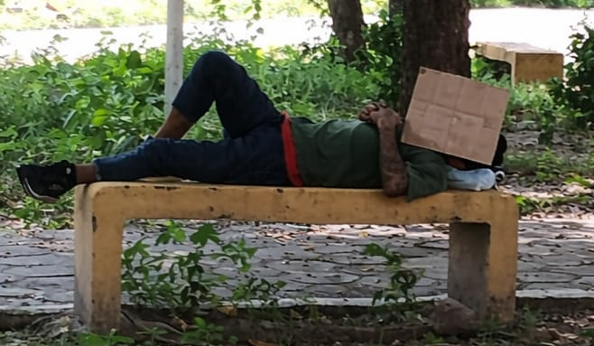

Desigualdade social, dignidade humana e o direito à moradia sob a ótica jurídica e social — registrado no bairro Parque Piauí, Teresina.

Parque Piauí, Teresina — Cidadão utilizando banco público para repouso e leitura, simbolizando a invisibilidade social e a privação de direitos fundamentais.
A fotografia, registrada no bairro Parque Piauí em Teresina, retrata a face nua da desigualdade social e a vulnerabilidade da população em situação de rua. O cidadão, ao utilizar um banco público para o repouso e a leitura, evidencia a privação de direitos fundamentais básicos, como a moradia digna e a intimidade.
Sob a ótica jurídica, a cena revela o abismo entre a norma constitucional e a realidade prática, onde a dignidade da pessoa humana é mitigada pela exclusão extrema.
A busca por informação em meio à precariedade ressalta a resiliência do cidadão frente à invisibilidade social e à urgência de políticas públicas eficazes.
Moradia digna não é privilégio. É direito. É dignidade. É respeito.
Fundamento da República Federativa do Brasil. Nenhum ser humano pode ser tratado como invisível ou destituído de valor intrínseco, independente de sua condição social.
A moradia é direito social garantido constitucionalmente. Sua ausência representa uma falha sistêmica do Estado em proteger seus cidadãos mais vulneráveis.
Todo ser humano tem direito a um padrão de vida capaz de assegurar-lhe saúde, bem-estar, alimentação, vestuário, habitação e cuidados médicos necessários.